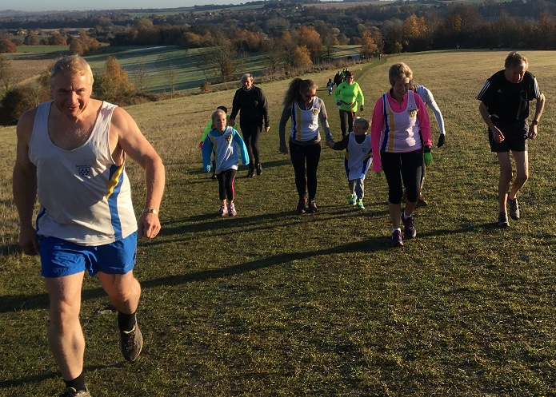
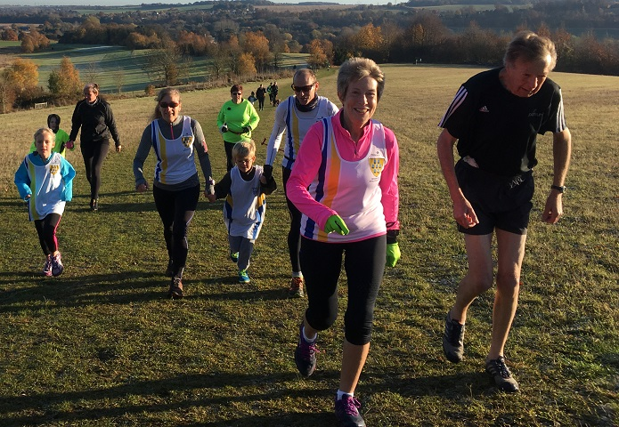
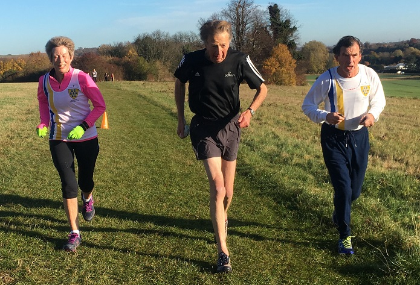
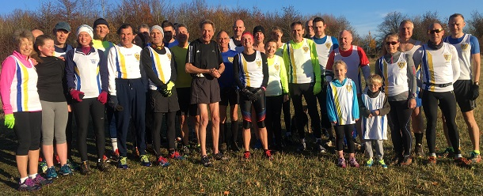

Thanks to everyone who turned up at Lullingstone this morning to celebrate Richard's achievement of reaching 250 Park Runs, writes John Denyer. An amazing feat, how does he keep going!
25 SAC took part and there were a few sons and daughters plus friends as well. We managed to swell the field to 87 and it was appropriate that Richard's grandson Bede won the race in a PB. Mark, his son was 5th and granddaughter Polly was in the top 15, the genes have clearly been passed on!
It was my first run at Lullingstone and although it is hilly it's a beautiful course made all the better by the bright sunshine, not for PBs but good training!




Richard got a course PB! Pictures by Grace Manzotti. The full results are here.